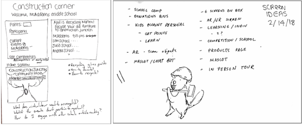
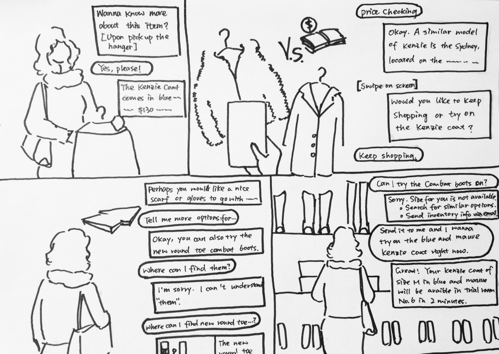
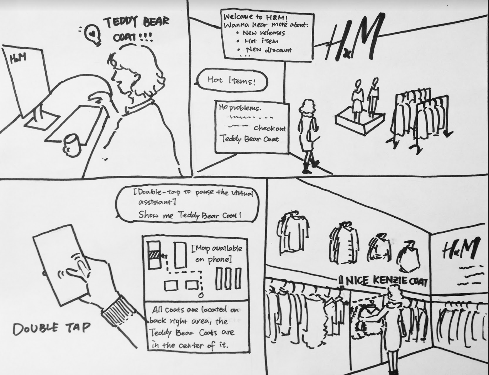
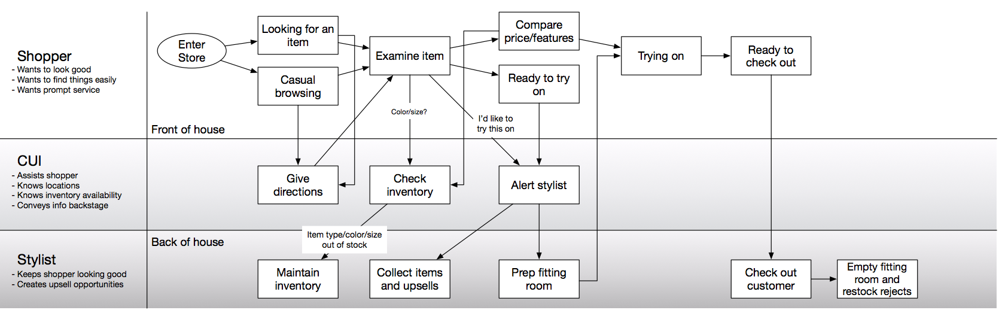
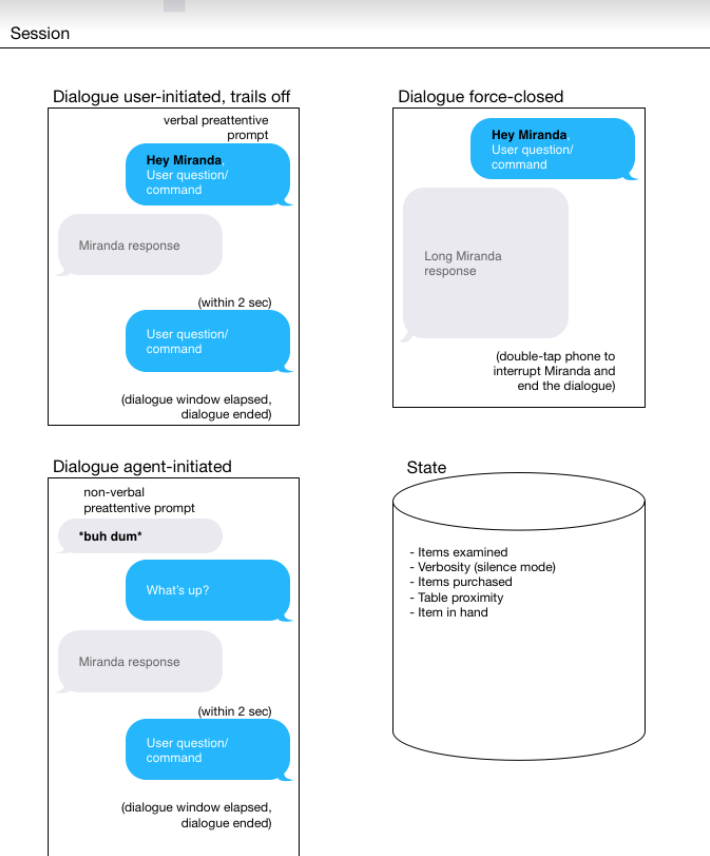

MIRANDA: ai X HUMAN
TYPE: CONVERSATONAL USER INTERFACE
DURATION: 3 WEEKS
ROLES: RESEARCH, MODELER, STRATEGIST, VIDEOGRAPHER
METHODS: VIDEO, ANIMATIONS, MODELING, UNDERSTANDING A SYSTEM


DURATION: 3 WEEKS
ROLES: RESEARCH, MODELER, STRATEGIST, VIDEOGRAPHER
METHODS: VIDEO, ANIMATIONS, MODELING, UNDERSTANDING A SYSTEM
01 PROBLEM STATEMENT
The purpose of this project was to better understand conversational user interfaces
in different domains. My team of three selected the retail space as our domain.
We researched many competing devices, such as voice assistants and
bluetooth beacons to better understand the space.
The purpose of this project was to better understand conversational user interfaces
in different domains. My team of three selected the retail space as our domain.
We researched many competing devices, such as voice assistants and
bluetooth beacons to better understand the space.
02 BRAINSTORMING AND GROUPING FEATURES
After researching the space, my team and I went about
brainstorming potential opportunities where CUIs could be implemented,
such as to create more personalized searches or to help a customer
navigate through the store and discounts better.
We brainstormed features that could accomplish this
and began grouping them into four unique categories
After researching the space, my team and I went about
brainstorming potential opportunities where CUIs could be implemented,
such as to create more personalized searches or to help a customer
navigate through the store and discounts better.
We brainstormed features that could accomplish this
and began grouping them into four unique categories



03 EXPLORING DIFFERENT RETAIL ENVIRONMENTS
Through coming up with features, what we realized is that
the dependence on the CUI is highly dependent on
the environment. For example, for luxury, which is
very personalized there is a very different usage
than say navigating a huge store like Forever 21. We explored
three key environments in an attempt to figure out the ideal placement
for our CUI: Department Store, Fast Fashion, and Luxury Stores.
We drafted both storyboards and multiple scenarios for each environment.
Through coming up with features, what we realized is that
the dependence on the CUI is highly dependent on
the environment. For example, for luxury, which is
very personalized there is a very different usage
than say navigating a huge store like Forever 21. We explored
three key environments in an attempt to figure out the ideal placement
for our CUI: Department Store, Fast Fashion, and Luxury Stores.
We drafted both storyboards and multiple scenarios for each environment.
04 EXPERIENCE PROTOTYPING
To model feedforward, error recovery, and
session termination, we used students to conduct
experience prototyping. The feedback was to better explain back-end function and how to get started.
Students felt there should be introductory material for new users and more language support.
To model feedforward, error recovery, and
session termination, we used students to conduct
experience prototyping. The feedback was to better explain back-end function and how to get started.
Students felt there should be introductory material for new users and more language support.
05 MIRANDA & MODEL TEXT
After exploring the three environments, we realized
there was no need for CUIs in the luxury space,
as high touch is a necessity. However, CUIs
could be used to elevate the department store experience.
Thus, we named our CUI Miranda - an upperclass touch
to department store shopping. We also drafted some model texts.
After exploring the three environments, we realized
there was no need for CUIs in the luxury space,
as high touch is a necessity. However, CUIs
could be used to elevate the department store experience.
Thus, we named our CUI Miranda - an upperclass touch
to department store shopping. We also drafted some model texts.

Model CUI

Model Session
06 CONCEPT VIDEO